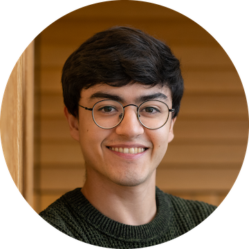

Jorge Yanar
Hi. I'm a PhD candidate at the Princeton Neuroscience Institute, working in the lab of Carlos Brody. I'm supported by the NSF GRFP.
My research combines high throughput behavioral experiments in mice, large-scale recordings, and computational modeling to investigate the neural computations underlying flexible decision making and working memory.
During my PhD, I developed a VR task in which mice remember and compare continuous values to guide decisions. Training dozens of mice on this task and carefully modeling their behavior revealed a surprising diversity of choice strategies. I'm now investigating how these different strategies relate to the geometry and dynamics of working memory representations in prefrontal and retrosplenial cortex.
Before Princeton, I spent two years as a post-baccalaureate researcher in Earl Miller's lab at MIT, investigating cortico-cortico and thalamocortical dynamics during anesthesia. Our work helped demonstrate that stimulation of the thalamus can partially reverse anesthetic unconsciousness.
I studied physics as an undergraduate at Loyola University Chicago, where I also conducted research on markers of human brain aging with Robert G. Morrison.